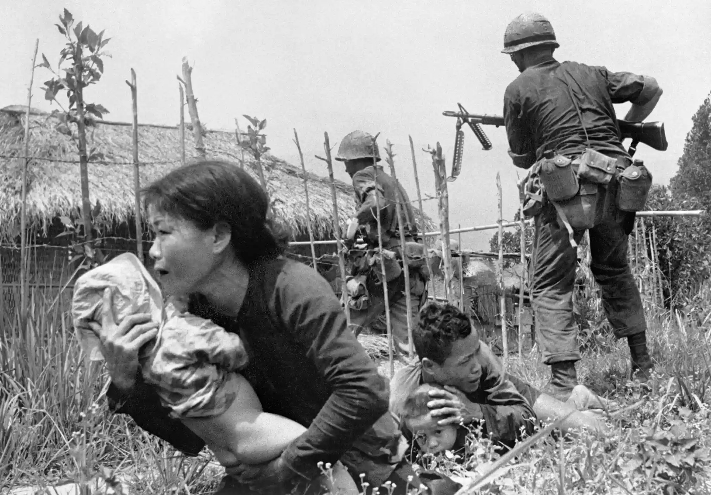
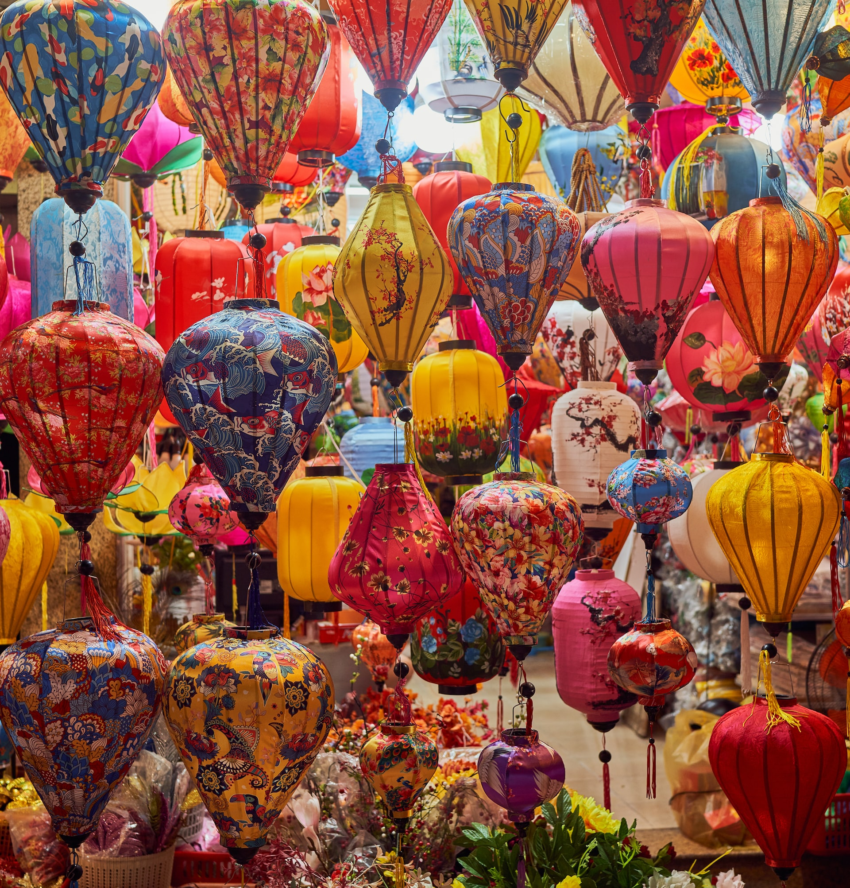
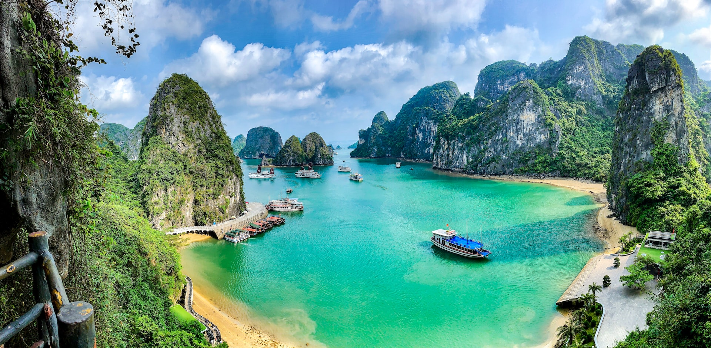
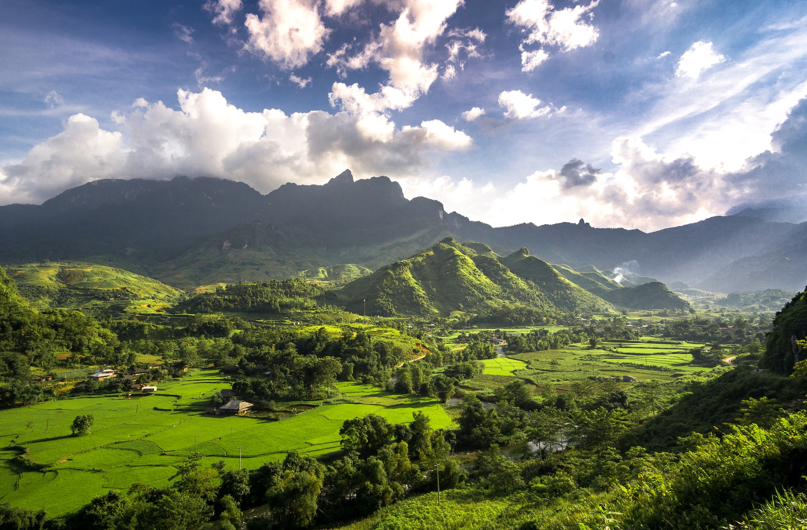

The Vietnam War was a long, costly and divisive conflict that pitted
the communist government of North Vietnam against South Vietnam and
its principal ally, the United States. The conflict was intensified
by the ongoing Cold War between the United States and the Soviet
Union. More than 3 million people (including over 58,000 Americans)
were killed in the Vietnam War, and more than half of the dead were
Vietnamese civilians. -History.com

Most Vietnamese people live in the countryside, mainly in the river
delta regions of the north and south. Recently though, people have
begun to move to the main cities of Ho Chi Minh (formerly Saigon)
and Hanoi. The most popular sports in Vietnam include soccer, table
tennis, volleyball, and martial arts. Vietnamese food is a blend of
Chinese and Thai styles and features seafood and homegrown fruits
and vegetables. As a communist country, Vietnam has no official
religion. But people are free to worship if they want to, and many
follow what's called the "Three Teachings" of Confucianism, Taoism,
and Buddhism. -Nationalgeographic.com

Ha Long Bay, Vietnamese Vinh Ha Long (“Where the Dragon Descends to
the Sea”), bay on the northwest coast of the Gulf of Tonkin, near
the city of Ha Long (Hong Gai), Quang Ninh province, northern
Vietnam. Situated 102 miles (164 km) southeast of Hanoi, the
580-square-mile (1,500-square-km) area contains some 3,000 rocky and
earthen islands, typically in the form of jagged limestone pillars
jutting out from the sea, and several caves and grottoes, all of
which blend together to produce an exotic and picturesque seascape.
A diverse population of marine and land mammals, reptiles, fish, and
birds are found in the waters and tropical forests.-Britannica.com

Vietnam is a long, narrow nation shaped like the letter s. It is in Southeast Asia on the eastern edge of the peninsula known as Indochina. Its neighbors include China to the north and Laos and Cambodia to the west. The South China Sea lies to the east and south. The mountains of the Annam Cordillera rise over most of the western side of Vietnam, while a thousand-mile (1,600-kilometer) coastline dominates the east.
At its narrowest point, Vietnam is only 30 miles (48 kilometers) wide. Two of Vietnam's largest rivers, the Mekong in the south and the Red in the north, end at the South China Sea in huge swampy plains called deltas. These regions are home to most of the country's people and provide fertile ground to grow rice and many other crops.-Nationalgeographic.com
Vietnam’s Confucian heritage is evident in the importance the Vietnamese give to the family. Families are essentially patrilineal, but Vietnamese women work alongside men in many jobs and play a major role in raising children and managing family finances. When possible, the Vietnamese prefer to work from early morning until early evening, with an extended rest period during the midday heat. In rural areas, both men and women wear trousers and shirts or blouses. On formal occasions and in urban areas, Western-style clothing is common, including skirts and blouses for women. Women still sometimes wear a form of the traditional ao dai, a long, slit tunic worn over pants..-Britannica.com